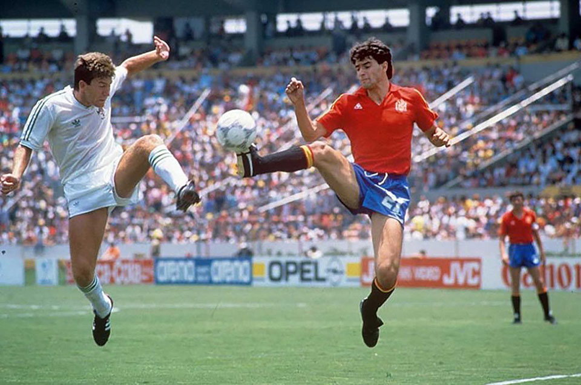

13.ª edición
La Copa de Maradona
Copa Mundial de la FIFA México 1986
31 de mayo – 29 de junio de 1986
País sede: México 🇲🇽
24 selecciones
52 partidos
Datos generales del torneo
- País sede: México 🇲🇽
- Ciudades sede: Ciudad de México, Guadalajara, Monterrey, Puebla, Toluca, Irapuato, León, Querétaro, Nezahualcóyotl
- Estadios: 12 recintos (incluye el Estadio Azteca)
- Selecciones participantes: 24
- Partidos jugados: 52
- Goles anotados: 132
- Campeón: Argentina 🇦🇷
- Subcampeón: Alemania Federal 🇩🇪
- Tercer lugar: Francia 🇫🇷
- Cuarto lugar: Bélgica 🇧🇪
- Máximo goleador (Bota de Oro): Gary Lineker (6 goles)
- Mejor jugador (Balón de Oro): Diego Armando Maradona
- Premio Fair Play: Brasil 🇧🇷
Jugadas y momentos destacados
México 1986 es considerado uno de los Mundiales más espectaculares por el nivel de juego,
el ambiente único del Estadio Azteca y, sobre todo, por la actuación histórica de
Diego Maradona, autor del “Gol del Siglo” y la “Mano de Dios”.

Resumen del torneo
-
La figura indiscutible del torneo fue Diego Maradona, quien lideró a Argentina
con actuaciones históricas, especialmente ante Inglaterra y Bélgica.
-
Argentina venció a Inglaterra en cuartos con dos goles que marcaron la historia del fútbol:
la “Mano de Dios” y el “Gol del Siglo”.
-
México fue un anfitrión ejemplar a pesar del reciente terremoto de 1985.
-
Francia ofreció un fútbol brillante, eliminó a Brasil en cuartos y terminó tercera.
-
Alemania llegó a su segunda final consecutiva, pero cayó ante una Argentina imparable.
Fase final (últimos 4)
Semifinales
- 🇦🇷 Argentina 2–0 Bélgica 🇧🇪
- 🇩🇪 Alemania 2–0 Francia 🇫🇷
Tercer lugar
- 🇫🇷 Francia 4–2 Bélgica 🇧🇪
Final
- 🇦🇷 Argentina 3–2 🇩🇪 Alemania
Selecciones participantes por grupo
Grupo A
- 🇮🇹 Italia
- 🇧🇬 Bulgaria
- 🇦🇷 Argentina
- 🇰🇷 Corea del Sur
Grupo B
- 🇲🇽 México
- 🇵🇾 Paraguay
- 🇧🇪 Bélgica
- 🇮🇶 Irak
Grupo C
- 🇫🇷 Francia
- 🇨🇦 Canadá
- 🇭🇺 Hungría
- 🇸🇻 Unión Soviética
Grupo D
- 🇧🇷 Brasil
- 🇪🇸 España
- 🇩🇩 Irlanda del Norte
- 🇩🇿 Argelia
Grupo E
- 🇩🇪 Alemania Federal
- 🇺🇾 Uruguay
- 🇩🇰 Dinamarca
- 🇸🇨 Escocia
Grupo F
- 🏴 Inglaterra
- 🇵🇱 Polonia
- 🇵🇹 Portugal
- 🇲🇦 Marruecos
Final: Argentina vs Alemania
La final se disputó el 29 de junio de 1986 en el Estadio Azteca ante más de 110 000 espectadores.
Argentina ganó 3–2 con un gol decisivo de Jorge Burruchaga, en uno de los partidos más emocionantes
de la historia del torneo.
Argentina 🇦🇷 – Alineación titular
- DT: Carlos Salvador Bilardo
- Nery Pumpido (POR)
- José Luis Brown
- Óscar Ruggeri
- José Luis Cuciuffo
- Ricardo Giusti
- Sergio Batista
- Jorge Burruchaga
- Héctor Enrique
- Diego Maradona (C)
- Jorge Valdano
Alemania 🇩🇪 – Alineación titular
- DT: Franz Beckenbauer
- Harald Schumacher (POR)
- Norbert Eder
- Karl-Heinz Förster
- Hans-Peter Briegel
- Lothar Matthäus
- Félix Magath
- Wolfgang Rolff
- Rudi Völler
- Karl-Heinz Rummenigge (C)
- Andreas Brehme
Reseña general
La Copa del Mundo México 1986 es recordada como una de las más emblemáticas de la historia.
Diego Maradona alcanzó un nivel de juego legendario, dejando actuaciones que aún hoy se consideran
las mejores jamás vistas en un Mundial.
Además, México se consolidó como uno de los mejores anfitriones en la historia del torneo.
La atmósfera del Estadio Azteca y la pasión del público mexicano hicieron de 1986 una edición inolvidable.